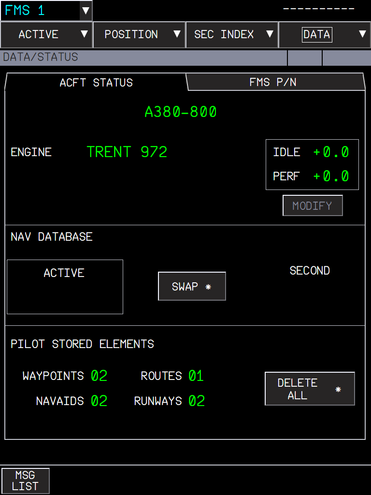
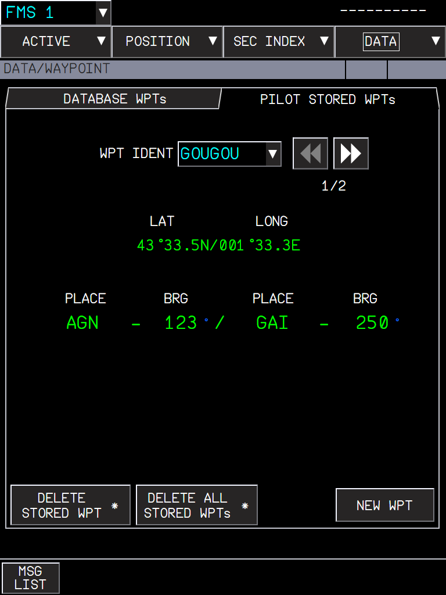
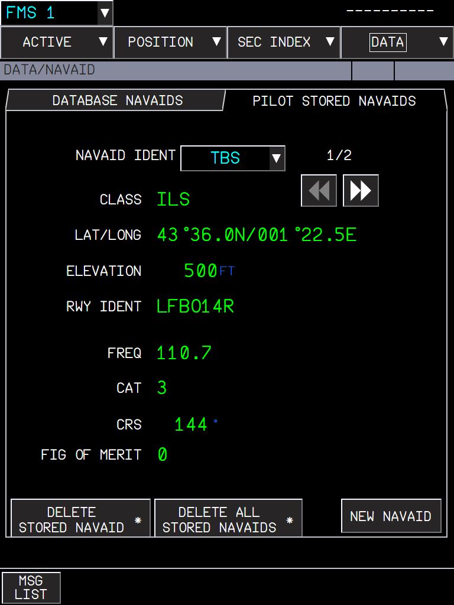
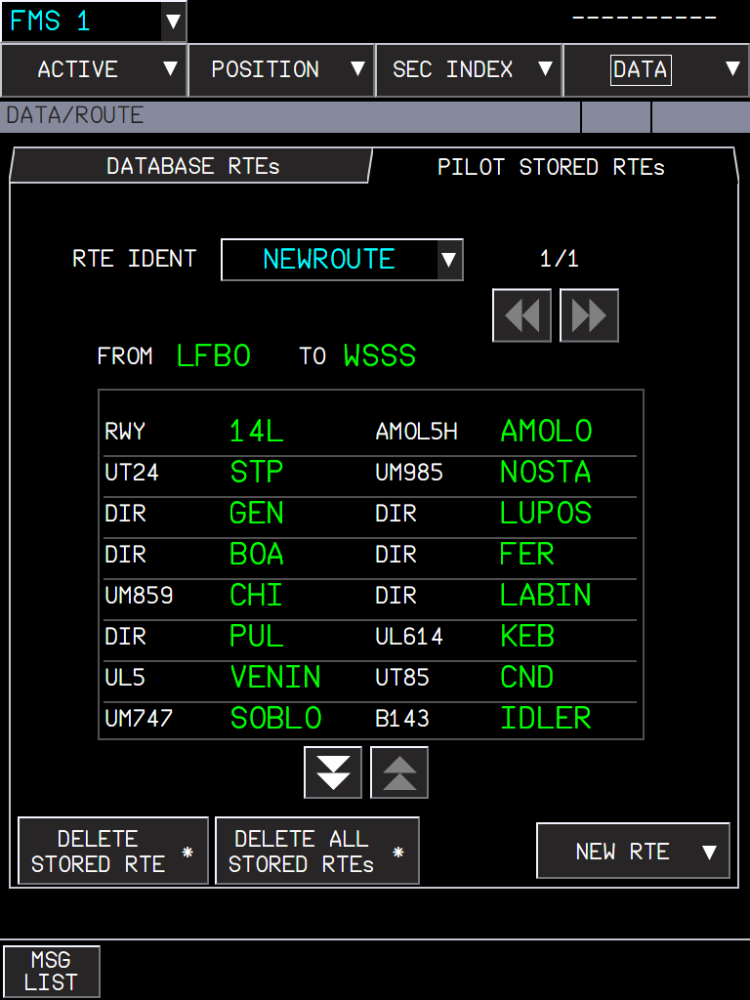
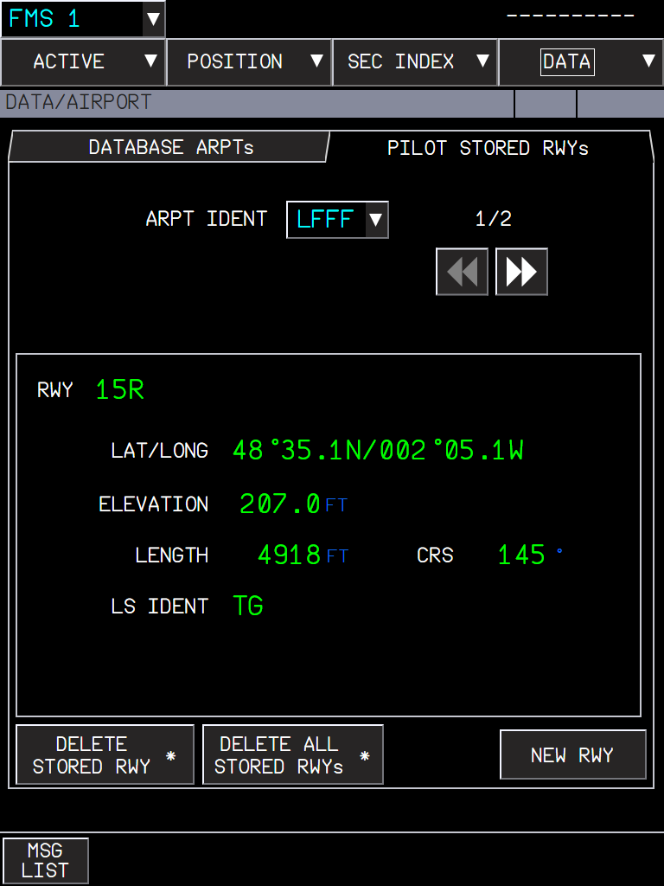

An optional flyPad setting that keeps the waypoints, navaids, routes and runways you stored in the MFD for the next flight
AircraftA380XWhere to find itflyPad > Settings > Realism > Keep MFD Pilot Stored Waypoints, Navaids, Routes and Runways Between Sessions; MFD > DATA > WAYPOINT / NAVAID / ROUTE / AIRPORT, DATA / STATUSPR branchpr/13-pilot-stored-elements-persistence (stacked on PR 10)StatusBuilt and tested with 17 unit tests; checked in the sim during development.PicturesflyPad and captain MFD in the local browser harness, running the build installed in the sim, with a few stored elements created by the harness.
1. What it is for
2. The setting
3. Storing elements in the MFD
4. What to expect
5. Limitations and why
1. What it is for
On the A380 the crew can store its own waypoints, navaids, routes and runways in the FMS (DATA pages). The FCOM says they are all deleted when all FMCs are shut down (DSC-22-FMS), and that is what happens by default: a new flight starts with an empty list.
In the simulator you may want to keep them from one session to the next (your own departure procedures, a favourite route). The setting below does that. It is marked Unrealistic because the real aircraft does not keep them.
2. The setting
Figure 1. flyPad > Settings > Realism: the last line. Off by default.
Off (default, as the FCOM): the stored elements are deleted at the end of the session.
On: they are saved in the simulator storage and restored at the next session, before the FMS loads them.
A reload of the flight (same session) never restores them twice.
Turning the setting off drops the kept copy: the next session starts empty.
The A380 OIT flyPad has the same option.
3. Storing elements in the MFD
The DATA menu pages have a PILOT STORED tab each. The DATA / STATUS page counts them and DELETE ALL clears everything.

Figure 2. DATA / STATUS: PILOT STORED ELEMENTS: 2 waypoints, 2 navaids, 1 route, 2 runways.

Figure 3. PILOT STORED WPTs: GOUGOU, defined by place/bearing - place/bearing (AGN 123° / GAI 250°), 1/2.

Figure 4. PILOT STORED NAVAIDS: an ILS with its class, position, elevation, runway, frequency, category, course and figure of merit.

Figure 5. PILOT STORED RTEs: NEWROUTE LFBO to WSSS with its summary (runway, SID, airways and waypoints).

Figure 6. PILOT STORED RWYs (DATA / AIRPORT): runway 15R of LFFF with its position, elevation, length, course and LS ident.
Limits of the database (FCOM)
Element
Limit
When full
Navaids
20
The first one created is deleted.
Runways
10
The first one created is deleted.
Routes
5
PILOT RTEs LIST FULL.
Waypoints
the FMS list of 99
LIST OF 99 IN USE.
Storing an element with the name of an existing one replaces it (no duplicates).
4. What to expect
Situation
What you should see
Setting off, new session
DATA / STATUS shows 00 everywhere.
Setting on, new session
The elements of the last session are back.
Setting on, flight reloaded
The elements are there once (no duplicates).
Setting turned off
The kept copy is deleted; the current elements stay until the end of the session.
Stored route of another city pair
Not offered in INIT / RTE SEL (routes are per city pair).
5. Limitations and why
Limitation
Why
What to do
Pilot-stored navaids cannot be tuned.
The radio tuning uses the MSFS navaids only.
-
The waypoint limit is 99, not the FCOM 50.
The FMS shares one list of 99 waypoints with its other functions.